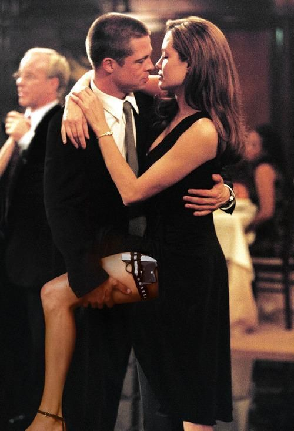
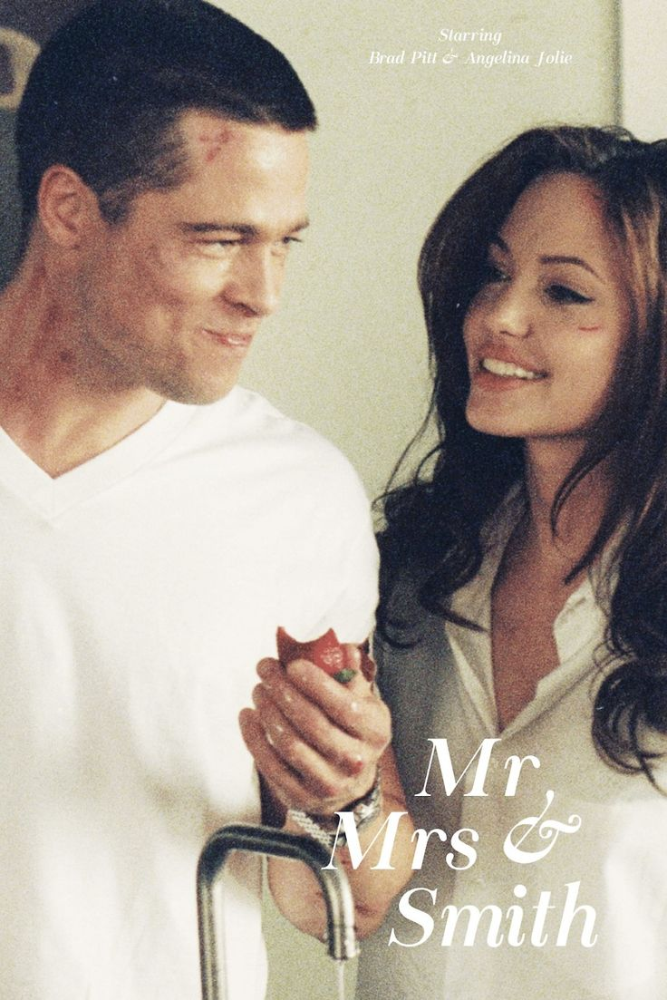

Action, Comedy, Romance
2005
120 minutes
Doug Liman
John and Jane Smith appear to be an ordinary married couple, but each is secretly a highly skilled assassin working for rival organizations. Their worlds collide when they are assigned to eliminate each other, leading to explosive action, hilarious conflict, and a renewed spark in their marriage.